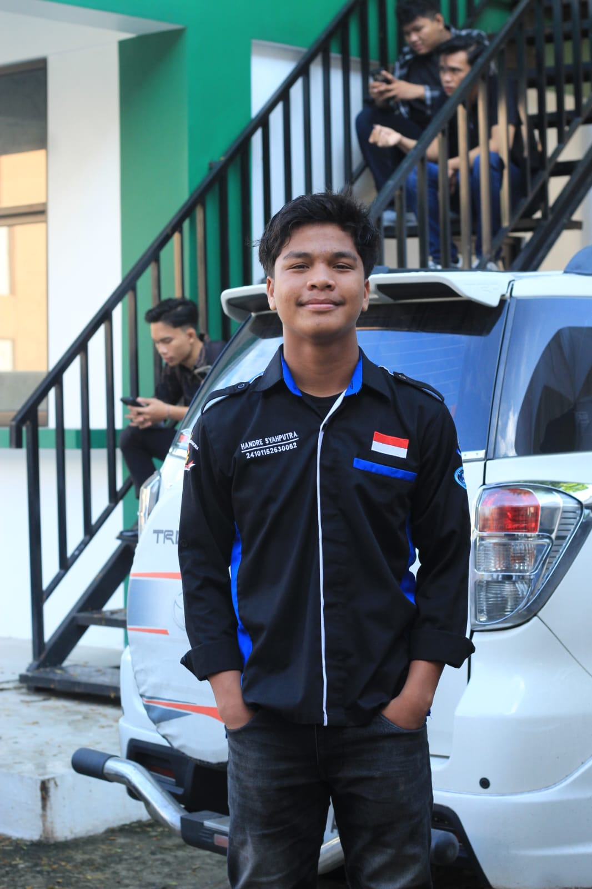

// Halo, saya
Junior Developer & Junior Data Sains
Saya menghidupkan data lewat analisis akurat dan membangun antarmuka web serta simulasi yang interaktif — mengubah pola data mentah menjadi solusi aplikasi yang aplikatif di dunia nyata.
Digital ID Card
Universitas Putra Indonesia

Teknik Informatika
Tgl Lahir
16/08/2006
Tahun
2026
Batahan, Mandailing Natal
Sumatera Utara
Tentang Saya
Perjalanan saya dimulai dari sebuah desa, tempat di mana akses teknologi awalnya terasa sangat jauh. Namun, rasa penasaran membawa saya melangkah ke dunia IT, dan sejak saat itu saya benar-benar jatuh cinta dengan bidang ini. Bagi saya, coding bukan sekadar mengetik baris instruksi, melainkan sebuah seni untuk menciptakan solusi dari keterbatasan.
Sebagai mahasiswa Teknik Informatika, saya mendedikasikan waktu saya untuk berkembang di bidang data science. Saya senang mengolah data mentah menjadi wawasan yang bermakna, sekaligus membangun sistem digital yang stabil dan bermanfaat bagi banyak orang. Berbekal semangat juang dari latar belakang saya, saya selalu siap menghadapi tantangan baru dan berkolaborasi dalam proyek-proyek inovatif.
2+
Tahun Belajar
5+
Proyek Selesai
5+
Teknologi
Keahlian
Proyek
Kumpulan proyek pilihan, dari eksperimen kecil dan tugas yang saya pelajari di perkuliahan.
Kontak
Jangan ragu untuk menghubungi saya untuk kolaborasi atau sekadar berdiskusi seputar data science dan web development.